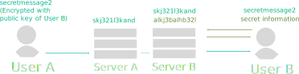

Charme
A distributed social network with end-to-end encryption
A short introduction by Manuel Schultheiss
What is Charme
A distributed social network with end-to-end encryption.
- Distributed means you can choose a provider hosting your data (like in email).
- Messages, profile information and posts can only be decrypted by the people you choose (not even the provider!).
Agenda
- Motivation
- Decentralization
- Encryption
- Sharing Economy
- Technology
- Future Work
The Three Pillars of Charme
- Decentralization
- Encryption
- Sharing Economy
Decentralization means that there is no central server hosting all users, but rather many small servers hosting some users. The main reason for this is to
avoid monopolies.
Why Decentralization?
What we know about online social networks:
- Most people do not want to pay
- Success depends on number of users
→ As hosting requires money, ads have become the standard business model for online services, but:
You are not the customer, you are the product.
Why Decentralization?
But how can the hosting of a social network be financed? Some competing ideas:
- Everybody pays for himself
- Bill Gates pays for everyone
- Friends pay for friends
And: Development can be funded by donations. (Or let's hope so)
Why Decentralization?
You can either
- setup your own server (Charme is even running on Raspberry Pi with good performance!)
- be hosted on a friends server
- or pay for it.
while
- Ad display in messages or posts is inhibited by RSA signatures and user data aquisition is inhibited by end-to-end encryption.
- Host servers do not have access to the front-end client.
Why Decentralization?
Before
Why Decentralization?
After
Why Decentralization?
"Dude, that graphic looks like the diaspora logo!"
Diaspora
is a really great piece of software. But we need end-to-end encryption to avoid companies and friends reading your messages or private posts.
Encrpytion
Why do we need encryption?
- To protect data from an evil server admin
- To protect data from attackers
- To protect data from ad agencies (and other agencies)
Even if the server is hacked, your data is not exposed.
An attacker would have to overtake your device too. This way we ensure that one can not obtain 10000 data sets by hacking a single server for example.
Client Software and server software are strongly seperated.
Public Key Cryptography
In order to hide data from the server we need end-to-end encryption.
-
The good thing
Only people communicating can read the messages.
- The bad thing
The public key must be checked, what requires some action from the user.
Encryption Scheme

Secret Information can be the public key directory or message keys for example.
Public Key Cryptography
-
We have to people: Bob and Alice.
Both have a public key (visible to everybody) and a private key (Visible only to themselves).
-
If Alice wants to send a message to Bob, she can use his public key to encrypt it. Bob (and only Bob) can then use his private key to decrypt it.
-
As everybody between the two can read and modify data, the public keys have to be verified over a secure channel (Meet in person, ask a friend etc.)
A Sharing Economy
Current status:
People buy stuff online from the other side of the world.
- Buy stuff from people near you. This may be more expensive in the first case, but saves a lot of resources.
Also the people you pay will spend the money in your town/your friend circle etc. later. If you buy stuff from far away the money is gone (At least if your local economy is not balancing the minus.)
- Do not always buy new things: Lend things from your friends!
FACT
Social networks are the ideal backbone for a sharing economy. Because people share with people they know or people nearby.
A Sharing Economy
Example queries:
- Who of my friends is traveling from Munich to somewhere this weekend with a car and has 2 seats free?
- Who of the people in my neighbourhood go cycling this weekend?
- Who can lend me a car in a 10km radius?
→ Data can be provided by users and existing web services!
A Sharing Economy
- In Charme, a context is an action that requires two or more people
- You can either provide a context or search for a context.
- Some examples: Events, travel routes, activities, meal sharing, selling things, reviews...
- Charme has a generic scheme to manage context.
A Sharing Economy
Context can be defined by a generic scheme:
'move': {
name: "Move from A to B"
attributes: [
{
id: "startLocation"
type: "location"
name: "Start"
filter: "location"
},
{
id: "seats"
type: "int"
name: "Seats"
filter: "range"
}
// ...
What is new in the frontend?
- Collections: Users do not have a single wall anymore, but rather a set of collections which can be subscribed by other users indiviudally.
So you can follow your friends "Music Collection", but not the "Holiday Photo Collection" for example.
- Contextual Posts: As described before
- A minimalistic design: To avoid distraction
The Backend
The backends retrieves and return JSON data and manages data in the database.
- Mostly written in PHP. It was favoured over node.js as it already contains most functions needed. For node we would have had to many
dependencies from a lot of libraries, from which we do not know how long they are supported.
- The database in use is MongoDB, mainly, because we can store JSON from the frontend easily and it is called scalable.
The Backend
- The Gearman library is used to send out messages.
- To provide WebRTC support to the frontend, we use ZeroMQ.
- For Push Notifications on Android, we use Google Cloud Messaging. Google can not read the messages however, as we only inform the device
that there are new messages on the server.
The Backend
- Fedora and Debian are the operating systems Charme can run on right now
- Background services for WebRTC and Gearman ("bg_events.php" and "bg_hydra.php")
- Administration via console. To check status run "admin/status.sh" and to start background services run "admin/startbg.sh".
Future Work / Roadmap
Until June 2016: Fix most of security stuff, release Beta version.
Afterwards:
- Improve cross server search using Distributed Hash Tables
- API: Allows developers to create own applications using the Charme user data
- iOS App
Sources
Hipster background images from unsplash.com:
{kind=link}